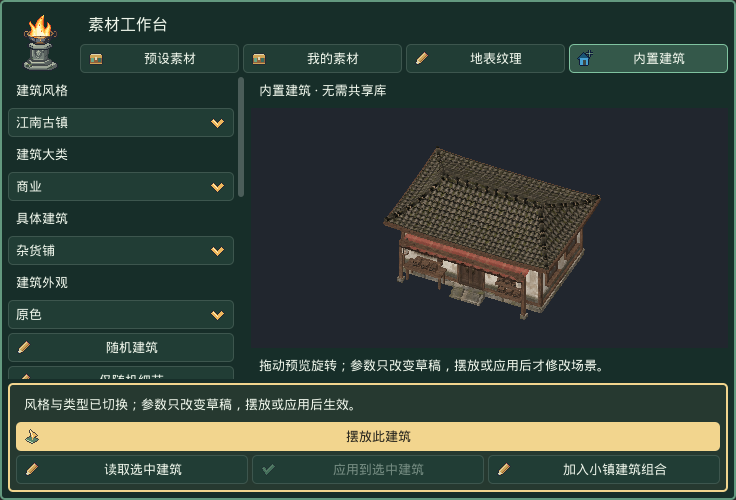

素材与场景实例编辑
内置建筑：先选用途，再调外形
打开 素材工作台 → 内置建筑，依次选择 建筑风格 → 建筑大类 → 具体建筑 → 建筑外观。江南古镇、欧式风格、沙漠聚落都提供下表中的 46 个功能条目，无需共享库。切换风格或类型即载入完整默认设计和预览，不需要额外点“载入”。
江南使用曲檐瓦顶、木构和石基；欧式使用坡屋顶、木石结构与适用的塔楼；沙漠使用厚墙、拱形门窗、露台和遮阳棚。同类共享结构骨架，但用途构件不同：铁匠铺有炉膛和烟囱，药铺有药柜，磨坊有磨轮，码头有栈桥与支撑。

建筑目录
名称随风格适配，功能标识保持一致。例如衙门／行政官邸／总督府，镖局／佣兵会所／商队护卫所，术士楼／法师塔／观星塔。表中按江南／欧式／沙漠排列存在差异的名称。
| 建筑大类 | 具体建筑 |
|---|---|
| 居住 | 普通民居、农舍、富商宅院、庄园 |
| 商业 | 杂货铺、武器铺、防具铺、药铺、集市摊位 |
| 食宿 | 客栈、酒馆、茶馆／饮茶馆／茶舍、驿站／驿站旅店／商队客栈 |
| 手工业 | 铁匠铺、木工作坊、裁缝铺、炼丹工坊／炼金工坊／药剂工坊 |
| 农业与仓储 | 粮仓、磨坊、马厩、畜棚、温室 |
| 管理与组织 | 衙门／行政官邸／总督府、议事厅／市政厅／议事院、公会、镖局／佣兵会所／商队护卫所、门派大殿／骑士团大厅／部族大殿 |
| 宗教与文化 | 寺庙／修道院／礼拜院、祠堂／纪念堂／先祖祭殿、宗教大殿／教堂／穹顶圣殿、书院／学院／学舍、藏书楼／图书馆／藏书馆 |
| 防御 | 城门、城墙、瞭望塔、兵营、堡垒 |
| 交通 | 码头、船屋、车马站／马车站／驼队站、关隘 |
| 探索与特殊场所 | 废屋、遗迹、墓穴、矿井入口、术士楼／法师塔／观星塔 |
两级随机与外观
| 操作 | 会改变什么 | 会保留什么 |
|---|---|---|
| 随机建筑 | 更新外形与细节种子，生成约束范围内的宽深、楼层、屋顶和门廊 | 当前风格、类型及其必需构件 |
| 仅随机细节 | 门窗装饰、招牌和局部细节组合 | 主体尺寸、入口、窗列及碰撞 |
| 按种子重现 | 按当前外形种子重新填入结构参数，使用当前细节及外观种子 | 相同版本、风格、类型和种子可重现同一组合 |
| 原色／素雅／暖色／风化 | 按屋顶、墙面、木构、石基等材质槽换皮 | 几何、位置和碰撞 |
手动调参后，请保存完整场景与生成资源；只记种子不能保存手动修改。外形种子、细节种子、外观种子各司其职。“按种子重现”会重填结构参数，使用前留意手动修改。
房屋显示宽深、1–3 层、屋顶、坡度、屋檐和窗列；摊位显示棚架高度及货架栏位；城墙显示长度、厚度、高度和分段；码头显示平台宽度、栈桥长度、甲板高度和支撑分段。不适用参数隐藏。每面窗列按主体每层四面墙分别计数，不含门和屋顶小窗；奇数时门左侧多一扇，窄墙会缩窄窗框。
新版使用三张原创风格图集，分别组织屋面、木构、墙面、石基、门窗和装饰。细瓦缝、木纹、墙裙与磨损由纹理表达，屋檐、梁柱和窗框保留真实几何。重复材质以约 40 像素／米为基准，构件贴图按门窗尺寸适配；近景最近邻采样，远景 mipmap 减少闪烁。Godot 会切出独立材质区域并生成各自的 mipmap，避免图集邻格串色。外观种子调整材质色调，不改变结构。模型受场景灯光影响，屏幕轮廓不会自动像素化。
放置、应用与保存
- 拖动预览旋转观察，调整参数。宽深是主体值，屋檐、台阶、翼楼还会增加实际占地；公共建筑沿用预设的主体放大比例。
- 点金色 摆放此建筑，鼠标在地形选位置，Q / E 旋转 15°，左键确认，Esc 取消。默认静态碰撞；单栋摆放不自动整地，坡地先制作地基。
- 修改已放置建筑时，选中它或内部网格，点 读取选中建筑，调整后 应用到选中建筑。位置、旋转、缩放与实例设置保留，可一次撤销／重做。
- 加入小镇建筑组合 加入自定义组合；自动功能配比见一键生成。
- Ctrl+S / Cmd+S 保存场景。
hd2d_generated/buildings中的模型、材质和完整配方要随场景备份；运行无需外部素材库或重新生成。
新配方使用生成器 v5，插件仍为 0.4.6。读取 v1–v4 不自动升级模型和标识；重新选择分类／风格才创建 v5 草稿，应用后才修改实例。旧 v2 的窗列修正仍沿用兼容流程。内部风格标识 forest 保留，只把用户看到的名称改为“欧式风格”。
本轮是外观模型与基础碰撞，不含室内、交易、生产、地下洞穴或交通系统。城门和开放棚架保留入口，码头有可站立甲板；墓穴和矿井入口的后方封闭，不通向地下场景。
本轮九套 HD2D 设计
本轮逐套优化普通民居、杂货铺、客栈在三种风格下的外形比例与材质。其余类型保留用途构件并复用适用的新材质，不属于本轮逐栋精修范围。共享库仅作为比例和材质层次参考，这些模型与图集为插件内独立生成／原创内容，无需安装共享库。
| 风格 | 普通民居 | 杂货铺 | 客栈 |
|---|---|---|---|
| 江南古镇 |  |
 |
 |
| 欧式风格 |  |
 |
 |
| 沙漠聚落 |  |
 |
 |
以上为 Godot 4.7.2 / Compatibility 的实际截图，使用相同灯光、正交角度和显示尺寸，按模型包围盒取景。江南以曲檐、石基和回廊区分用途；欧式以木石结构、店棚和客房层区分；沙漠以厚墙、露台、壁龛与内退上层区分。
外部素材与场景实例
素材工作台用于选材和连续摆放；右侧“素材”模块用于修改明确选中的场景实例。
- 在工作台选择素材，点击金色“摆放选中素材”，在地形上点击放置。
- 点击“编辑刚放置物件”，或者 Esc 退出摆放后在场景树／视口选中物件。
- 右侧显示当前物件和来源素材。修改适用参数后点击“应用素材参数”，只改变这一件。
- 需要同步同素材的其他物件时，使用“应用到当前场景所有相同素材”，确认范围。只同步本次修改字段。
只选素材缩略图不会指定某个实例。点击“选择场景实例…”后选定要修改的物件。点击当前实例对应的同一素材，不会清空修改草稿。3D 模型不显示只适用于图片的图集、裁框和贴片参数。
共享库预览会复用到右侧。断开共享库后使用工程缓存；缓存被清除时从已准备的工程资源重新生成，无需重新摆放。
使用 Godot 底部“素材工作台”选择共享素材，右侧素材页管理当前场景物件。
地表纹理在地形页选取： 共享库另含35张原创地表和14套方案，在地形 → 地表层与绘制打开底部工作台的地表纹理页。地表与物件共用库路径，但不会登记成摆放条目。升级时同时保留terrain-index.json和terrain目录。
共享包提供模型和图片贴片的原始外观，标记为本机学习素材。可用皮肤以条目实际列表为准。
先摆放，再选中场景物件修改参数。 顶部醒目的 预设素材库 打开底部素材工作台，同时容纳图片贴片和实体模型。PNG 保持图片贴片，不会自动重建为实体。
预设素材库与共享位置
按 选择素材 → 选择皮肤 → 预览 → 摆放 使用。准备完成后，点击工作台底部金色的 摆放选中素材，再在场景地面点击落点。来源可选 预设素材／我的素材，共用系列、分类、搜索和预览；每页最多48张缩略图。预设内容只读，自行导入的内容进入“我的素材”。模型预览中按住左键旋转。
选择你电脑上的共享库安装位置。点击插件顶部的 位置… 可选择工程之外的文件夹；位置存于 Godot 编辑器设置，其他工程使用同一位置。第三个独立包 03_HD2D_0.4.5_Shared_Asset_Library.zip 中的 HD2D_Shared_Asset_Library 是这处外置目录的内容；案例素材包不含共享库，只体验案例可以不下载第三包。不要整个复制进工程。保留其 preset-index.json 和 presets 目录关系；自己的 index.json 与 objects 要保留。历史案例请按原版本随包说明安装，参见旧版案例与资源。
浏览只读取索引和当前页缩略图；选中素材时才复制该项及依赖到当前工程并显示准备进度。快速切换时，旧任务不会替换新选择的预览。已准备并保存的场景只引用工程内资源，断开外置库后仍能运行。首次摆放自动登记到当前场景素材列表，重复摆放不重复登记；登记与摆放可以一起撤销。已关联但未登记的物件也能在场景列表中看到，浏览本身不保存场景。
皮肤是已配置的整套外观，可选项取决于该条目已安装的内容。选择皮肤只影响预览和之后的摆放；已有物件要点击 应用皮肤，默认“选中物件”，也可选“当前场景全部兼容物件”。数量区显示影响项和不兼容项；批量换皮可以一次撤销。恢复原始外观先选回原始皮肤，再点“应用皮肤”提交。位置、尺寸、碰撞和模型形状保持原值。当前学习包以原始外观为主；没有其他皮肤时无需额外选择。
在另一台电脑准备素材时报错
错误指向 .png.import 时，表示选中条目后的导入配置准备失败，不是模型列表缺失。共享库应解压在工程外；配置文件被删除或重写时，重新解压干净副本，或同时更新带编号的插件包和共享库包。索引中保留原始导入设置，并用 .gdignore 防止误扫描全库；图片、模型本体仍须通过哈希校验。更新时保留自己的 index.json 和 objects。
内置生成器只需第一包。需要外部静态素材时，再连接旧版可选共享库；不需要案例包。 未新建地图也可以浏览和预览，摆放时才需要活动舞台。测试可搜索 SM_NJ_JiuGuan001，点击缩略图，确认右侧出现可旋转的酒馆模型。
准备时，工作台显示当前素材、正在复制的文件或 Godot 导入等待时间。可以点击 取消准备 或直接换选其他素材。单次导入等待超过90秒会显示具体待处理文件，并提供 重试准备；先查看 Godot 的输出和导入面板，再重试。无需反复设置已经连接的库路径，也不用把整个共享库复制进工程。失败或换选时会清除上一项的预览画面。
导入目标
展开默认收起的 导入与检查，先选目标，再通过文件按钮、文件夹接收窗或工程文件拖放导入。
| 目标 | 结果 |
|---|---|
| 本机共享素材库 | 不需要活动舞台。保存素材、依赖和真实缩略图到“我的素材”；不登记或摆放到当前场景。 |
| 当前场景 → 素材库与摆放 | 加入当前舞台的素材列表，不自动加入共享库。首次默认此项，之后记住本工程的选择。 |
导入结果显示目标、成功数、重复项和失败原因。共享库复制完整依赖，内容重复时复用；同名不同内容独立保存。依赖缺失、无法解析的 UID、远程 glTF 引用及无法确认运行时依赖的自定义脚本素材会拒绝入库，并保留原因；可继续使用原有工程导入流程。多个工程的入库使用写入锁与原子索引更新。异常退出留下的锁应先确认对应进程已退出，再备份并移出 .write-lock 后重试。
导入比例等设置随资源保存，并参与内容判重。引用外部资源或脚本的自定义导入设置需要先在源工程整理为自包含 GLB；插件不会静默丢弃这些设置。
单件与批量参数
当前场景素材修改包含“素材库与摆放”至“底色透明与原生材质”分组。父分组、素材库与摆放、导入与检查首次使用时收起，之后记住用户选择。选中物件、来源素材、本次修改字段和当前工具状态保持可见。只选缩略图时，参数应用按钮不可用。
| 按钮 | 范围 |
|---|---|
| 应用素材参数 | 当前选中的一个关联物件。 |
| 应用到当前场景所有相同素材 | 当前编辑场景中的匹配物件及关联植被记录；确认数量、字段与跳过原因后，一次提交、一次撤销。 |
批量只同步本次改动的字段。例如只调整碰撞，会保留其他物件的动画、风摆、皮肤和 Transform。单件应用后保留这组字段，方便随后批量同步；换选其他物件后清空。匹配依据是稳定条目标识，同图不同裁框的独立条目不会误合并；旧资源按实际共享 Resource 引用判断。
名称、分类、复制、关联和移除是“条目管理”的独立操作。改名或分类用 保存条目名称与分类；预设条目先复制为新条目才可编辑。复制产生新标识，共用源图或模型。实例参数不改写共享原图、网格或预设材质。最后按 Cmd+S / Ctrl+S 保存。
默认碰撞与金色摆放按钮
新导入、新摆放和新散布的素材默认启用静态碰撞，包含图片贴片和 3D 模型；从旧素材库再次摆放也适用，无需重新安装共享包。
素材面板初始勾选“启用静态碰撞”。仅选择素材条目时，显示新摆放将使用的碰撞配置；选中场景物件时，显示该物件保存的实际设置。内置建筑和一键生成小镇也默认开启建筑碰撞。
- 2D 图片： 默认生成有 0.5 米厚度的盒体，宽高按贴片尺寸、中心按锚点对齐。透明区域不会自动镂空。
- 3D 模型： 优先复用模型自带的静态碰撞；没有时按原网格生成。需要简化时可改为盒体或胶囊。
- 单独调整： 摆放后选中物件，在“静态碰撞”里修改或取消“启用静态碰撞”，再点击“应用素材参数”。同素材批量修改使用独立的批量应用按钮。
已有场景中已经摆放的物件和植被记录保留原设置，不会因升级自动增加碰撞。需要更新时，选中物件后主动应用碰撞设置。
Godot 4.7.2 / Compatibility：使用图片与盒体示例素材，金色按钮表示可以开始摆放。
静态碰撞参考线与测试
按 摆放 → 选中物件 → 确认静态碰撞已启用 → 显示碰撞参考线 → 调整形状、尺寸、偏移 → 单件或批量应用 → 隔离测试行走检查 操作。
显示碰撞参考线默认关闭，记住本工程的编辑器偏好。开启后仅显示当前物件；草稿会立即改变线框并标注“未应用”，实际物理碰撞仍需点击应用。参考线使用编辑器 Gizmo，跟随物件移动、旋转和缩放，不保存为场景节点，也不进入游戏或隔离预览。取消选择、关闭开关或禁用碰撞会清除线框。原来的“摆放时显示碰撞线框”另行控制落点预览。
盒体适合箱子和简单墙体，胶囊适合树干，原网格适合需要保留几何细节的模型。透明图片不会自动生成镂空碰撞。测试时同素材摆三件：先单件修改碰撞确认只变一件，再批量应用确认其他两件仅同步碰撞；撤销一次应撤回整批。保存重开后再用隔离测试确认阻挡，线框不会进入测试窗口。
分类、火盆图集与风摆
已导入的素材怎么分类？ 选场景根节点 → 素材 → 点素材缩略图 → 展开 条目管理 → 素材分类，输入例如 Props / 火盆 → 点击 保存条目名称与分类 → Cmd+S。分类列表会刷新；若素材因筛选而消失，分类筛选选“全部”。导入按钮上方的分类文本只决定下一批新导入素材的分类；搜索旁的分类下拉只筛选，既不改文件夹，也不决定风、动画或碰撞。分类名称由用户填写，不自动翻译。
刚性物件的风摆设为 0。 新导入条目默认风摆为 0；已有植物可保留自己的风摆。分类名称不会自动改变风摆数值。
| 参数 | 新导入初值 | 范围 / 步长 | 作用 |
|---|---|---|---|
| 此素材风摆幅度 | 0 | 0～1 / 0.01 | 0不弯动；植物可用0.08。只作用于插件图片贴片材质；导入的自定义3D材质不自动转换。旧资源可能仍显示0.08。 |
选火盆 → 展开 贴片外观与风摆 → 此素材风摆幅度设 0 → 应用素材参数 → 保存。环境页“植物风力”是全舞台倍率；将它设0会让花草也停，不是只修火盆。风摆是网格变形，火焰闪动是逐帧播放，两者独立。程序云影仍可能造成亮度变化，不等于物体摇晃。
实际火盆图集如何播放？ brazier_lit_sheet.png 为256×256，4列×4行，共16帧，每格64×64。先摆放并选中该物件，先“重置为完整图片”（区域宽、高同时0），按下表设置后点“应用素材参数”：
| 设置 | 建议值 |
|---|---|
| 循环播放规则精灵图集 | 开 |
| 精灵图集列数 / 行数 | 4 / 4 |
| 起始帧（从0开始） | 0 |
| 播放帧数 | 16 |
| 图集帧速率FPS | 8（建议，非已知原游戏时长） |
| 此素材风摆幅度 | 0 |
| 横向 / 脚底锚点 | 0.5 / 1；按实际可见底座微调 |
| 贴片宽 / 高 | 先用2 / 2米检查，再按场景比例缩放 |
| 最近邻 / 按底色透明 | 开 / 关（此图已有Alpha） |
先左到右、再上到下播放；8FPS下16帧循环约2秒。可在“播放已应用素材预览”查看，点击“镜头 → 预览当前场景”看已摆物件的实际播放。brazier_unlit.png是静态未点燃版，关闭图集循环，风摆同样0。图片不会自动产生灯光；需要照亮附近地面时另加原生OmniLight3D。
旧场景里的火盆还不变？ 较早版本已摆出的火盆是独立MeshInstance3D，不是新的关联HD2DProp；仅修改库条目不能反向更新它。先备份工程和记录该节点Transform，用更新后的条目重新摆一份并对齐，确认动画/大小/碰撞后再移除旧节点。不要直接清空整座Scenery。只想让旧贴片停止风动，也可在原生Inspector的Material Override → Shader Parameters把wind_amount设0；共享材质先Make Unique，以免改变别的物件，但这不会自动给旧节点接入图集参数。
单件按钮只修改选中HD2DProp；同素材批量按钮也处理Foliage中的关联记录。替换插件前先保存并备份工程，保留自己的场景与原始图片。
可折叠功能分组
点击带边框的标题展开或收起。★为首次默认展开，之后记住本工程的选择。全部展开／全部收起只作用于当前页。可用Tab聚焦标题，Enter/Space切换，左/右键收起或展开。收起保留草稿和正在使用的工具／试听，不会应用或保存；素材应用按钮位于“当前场景素材修改”父分组内、各参数子分组外。
| 分组 | 包含功能 |
|---|---|
| 导入与检查 | 外部接收窗、工程拖入区、导入分类、无损导入、导入结果、检查缺失资源。 |
| 当前场景素材修改 | 以下场景素材子分组和单件／批量应用按钮；默认收起。 |
| 素材库与摆放 | 搜索、分类筛选、缩略图多选、单件摆放；收起不停止摆放。 |
| 条目管理 | 已有条目的名称、分类、复制和重新关联；不重命名磁盘文件。 |
| 贴片外观与风摆 | 宽高、脚底锚点、朝向、透明裁切、采样与单素材风摆。 |
| 图集裁切 | 拖框预览、区域X/Y/宽/高、重置为整图；都是待应用参数。 |
| 精灵图集动画 | 图集开关、行列、起始帧、帧数、FPS、按单帧匹配宽度和已应用预览。 |
| 静态碰撞 | 碰撞开关、网格/盒体/胶囊、尺寸/偏移、匹配盒体、摆放线框。 |
| 底色透明与原生材质 | 指定底色、容差和原生材质入口；已有真实Alpha时关闭去底。 |
按钮与操作
| 界面按钮 | 作用 / 何时生效 |
|---|---|
| ＋ 导入素材（可多选） | 选择图片、GLB/glTF、场景或网格资源，加入素材库。外部文件复制进工程；复杂场景依赖需完整保留，不能只拷贝 tscn。 |
| 单株 / 单件摆放 | 进入落点预览，在地面点击放置当前素材；Esc 退出。也可以从缩略图拖到视口。 |
| 重置为完整图片 | 把裁框四个数值重置为 0；仍需点应用素材参数才提交。 |
| 在 Inspector 编辑当前物件 | 打开当前选中物件，可设置其独立 Material Override、Cast Shadow 和 Transform。 |
| 应用素材参数 | 只提交当前选中关联物件的参数覆盖，可撤销；同步到其他同素材物件使用独立的批量按钮。 |
| 移除素材库条目（不删文件） | 从当前素材库移除选中项，不删除磁盘图片；既有布景是否仍引用它要另行检查。 |
逐项参数
多数数值先留在面板草稿，点击对应“应用”才提交。笔刷参数在绘制时读取；导入和选择纹理等动作立即执行。应用不等于磁盘保存，最后按 Ctrl+S / Cmd+S。例外以各按钮说明为准。
范围列中“最小值 … 最大值；步长”对应控件限制；下拉框列出可选值。单位和前提写在含义列。滑块与右侧数字框是同一个参数的两种输入方式。
| 参数 | 初始默认 | 范围 / 步长 / 选项 | 含义与限制 |
|---|---|---|---|
| 像素图无损导入 / 禁用自动 3D 压缩 导入与检查 |
On / 开 | — | 导入时保留像素纹理，禁止自动 3D 压缩；不是放大或提升原图质量。 |
| 分类 素材库与摆放 |
全部 | 全部 | 仅筛选当前素材库显示项；不会改变素材的分类或删除素材。 |
| 贴片宽度（米） 贴片外观与风摆 |
2 | 0.05 … 100; 0.05 | 贴片在世界里的宽度，单位米；导入时可能按图片比例自动设置。 |
| 贴片高度（米） 贴片外观与风摆 |
2 | 0.05 … 100; 0.05 | 贴片在世界里的高度，单位米；与宽度一起决定显示比例。 |
| 横向锚点 贴片外观与风摆 |
0.5 | -0.5 … 1.5; 0.01 | 横向落点比例，0 为左边、0.5 为中心、1 为右边；可以超出图片。 |
| 脚底锚点 贴片外观与风摆 |
1 | -0.5 … 1.5; 0.01 | 竖向落点比例，0 为顶部、1 为底部。透明留白多时应对准可见植物根部。 |
| 贴片朝向 贴片外观与风摆 |
固定平面 | 固定平面,绕 Y 轴朝向镜头 | 固定平面保留布景朝向；绕 Y 轴朝向镜头会转向观察者，但不俯仰。 |
| 透明裁切 贴片外观与风摆 |
0.5 | 0 … 1; 0.01 | 透明度小于阈值的像素不显示。调高可收边，也可能切掉细叶与头发。 |
| 像素最近邻采样 贴片外观与风摆 |
On / 开 | — | 开启后使用最近邻采样保持像素边缘；关闭适合需要平滑过滤的高清贴图。 |
| 启用静态碰撞 静态碰撞 |
新导入／摆放默认开 | — | 生成所选碰撞形状；详见下方碰撞参数。透明处不自动镂空。 |
| 按指定底色透明（仅纯色背景 RGB 图） 底色透明与原生材质 |
Off / 关 | — | 只用于纯色背景 RGB 图片的显示去底；已有真实 Alpha 的图片应关闭。 |
| 要去除的底色 底色透明与原生材质 |
212121 | Color | 选取需要隐藏的底色；角色或植物中相同颜色也会受到影响。 |
| 底色容差（线性颜色差） 底色透明与原生材质 |
0.005 | 0 … 0.25; 0.001 | 允许的线性颜色差，越大删除的相近颜色越多。最小步长 0.001，不能保证输入更细数值。 |
| 区域起点 X（像素） 图集裁切 |
0 | 0 … 32768; 1 | 裁框左上角在原图中的 X 像素坐标，向右增加；不是世界坐标。 |
| 区域起点 Y（像素） 图集裁切 |
0 | 0 … 32768; 1 | 裁框左上角的 Y 像素坐标，向下增加。 |
| 区域宽度（像素） 图集裁切 |
0 | 0 … 32768; 1 | 裁取的像素宽度；宽和高同时为 0 才表示使用整图。 |
| 区域高度（像素） 图集裁切 |
0 | 0 … 32768; 1 | 裁取的像素高度；请保证矩形位于原图范围内。 |
其他可见控件
| 控件 | 说明 |
|---|---|
| 导入分类 | 给本次新增素材使用的分类名；用户名称不随界面语言翻译。 |
| 搜索名称与缩略图库 | 输入名称、分类或路径即时筛选；Ctrl 多选用于混合笔刷，拖动缩略图可直接摆放。 |
| 图集预览黄框 | 在原图预览拖框更新区域四参数；只改变取样区域，不改写 PNG。需要应用。 |
操作顺序与常见误区
先摆放，再选中场景物件应用参数。单件选中后可用 Godot 原生移动/旋转/缩放控制柄继续编辑。带外部依赖的 glTF/场景先复制完整目录到工程，等待导入完成。
保存、退出笔刷和预览请看顶部工具栏说明。这里使用侧栏、缩略图、笔刷和原生 Inspector 完成布景，不要求用户编写 GDScript。
从系统文件夹直接拖入
先选择导入目标；导入当前场景时需有活动舞台。点击 打开文件夹拖入接收窗，把 Finder / 系统文件夹中的文件或文件夹拖到弹出的 Jeff Studio 场景接收窗，处理完成后返回素材页。工程内的 FileSystem 文件可直接拖到素材页顶部提示区或缩略图库。原来的多选文件按钮仍保留。
系统文件请拖到插件接收窗，不要拖到 Godot 主窗口任意位置；后者由 Godot 原生复制流程处理，不保证进入插件库。接收窗不是另一个场景编辑器，也不会覆盖源文件。
支持 PNG、WebP、JPG/JPEG、SVG、GLB、glTF、3D Godot 场景和 Mesh。当前场景目标下，外部图片/GLB 复制到 res://hd2d_imports。共享目标会在独立暂存工程验证并复制完整依赖。同名不同内容使用不同路径和标题；同源重复导入跳过。当前场景目标的外部 glTF、tscn/scn、tres/res 先完整复制依赖目录到工程，再从 FileSystem 拖入；插件不会抓取任意外部依赖。GLB 如有外部引用也需要准备完整依赖。文件夹每批最多200个素材、最多8层；隐藏目录、符号链接和addons跳过。角色序列、地表和音乐使用对应功能页，不要整目录当植物导入。
新增按钮、分类与缺失资源
| 按钮 / 控件 | 作用 |
|---|---|
| 导入结果 | 列出成功、重复、失败和具体路径；失败不静默生成空条目。 |
| 检查缺失资源 | 检查源文件和已声明依赖，不检查脚本运行时拼接路径。缺失条目保留警告图标与路径。 |
| 搜索名称、分类或路径 | 不区分大小写；显示数量区分被筛选与未导入。同场景选择节点保留筛选，换案例清空旧筛选。 |
| 素材名称 / 素材分类 | 编辑已有条目，点击“保存条目名称与分类”提交；名称不能为空，不重命名磁盘文件。 |
| 复制条目（共用原文件） | 复制配置，共用PNG。想从同图取另一丛花，用这个按钮，再改名和裁框；不要重复导入。 |
| 重新关联源文件… | 替换源文件，重置裁框、关闭图集播放并清除旧缩略图；尺寸等保留，需重新检查比例。可撤销。 |
| 按单帧比例匹配宽度 | 根据裁框、行列与贴片高度计算单帧宽度，受宽度输入范围限制；仍需应用。 |
| 按贴片尺寸匹配盒体 | 填入盒体宽高、0.5米厚度，中心按锚点对齐。只是填草稿，还需启用碰撞并应用；不是不透明轮廓检测或3D模型包围盒。 |
精灵图：静态裁框与循环动画
取单丛花：设置图集区域，保持“循环播放规则精灵图集”关闭。取同图另一丛：复制为独立条目，摆放后选中物件再裁框。
例如128×128的图片，含2×2个64×64帧：开启循环图集，列数2、行数2、起始帧0、播放帧数4、FPS 8；点“按单帧比例匹配宽度”，再点“应用素材参数”。下方小预览播放当前物件的已应用帧；库条目保持原参数。要同步已摆物件或植被记录，使用同素材批量按钮。
| 参数 | 默认 | 范围与含义 |
|---|---|---|
| 循环播放规则精灵图集 | 关 | 图片素材专用，在上方裁框内均匀切格，从左到右再从上到下。 |
| 精灵图集列数 / 行数 | 各1 | 各1–128，整数；裁框像素必须能整除行列。 |
| 起始帧（从0开始） | 0 | 0–16383；0是左上格，2×2图集中2是左下格。 |
| 播放帧数 | 1 | 1–16384；连续读取，起始帧加帧数不能超出格子总数。 |
| 图集帧速率 FPS | 8 | 0.1–60，步长0.1；4帧在8 FPS下一轮约0.5秒。 |
| 播放已应用素材预览 | 开 | 只暂停/播放侧栏小预览；修改草稿需应用，不改变正式场景播放。 |
场景动画以材质引擎时间循环，MultiMesh批次也能播放，同种素材同步。舞台暂停不会暂停这种材质动画。不支持不规则图集JSON、逐帧不同时间、逐株动作和任意播放顺序，不补画缺帧。2/4/8向角色、PNG序列及SpriteFrames继续在角色页配置。单帧画布与脚底应预先对齐。
给素材设置碰撞体积
摆放 → 选中场景物件 → 确认“启用静态碰撞”，勾选“显示碰撞参考线” → 选形状、调整尺寸和偏移 → 应用 → 隔离测试行走。只导入库而尚未摆放时，场景里没有碰撞。
树木可先用宽0.6、高2、厚0.6米，偏移(0,1,0)，只挡树干。小草和花田也默认开启；若希望角色穿行，可按需关闭碰撞。透明像素、风摆、逐帧轮廓不会自动改变碰撞，碰撞体也不随billboard镜头朝向旋转。
| 参数 | 默认 | 范围与含义 |
|---|---|---|
| 启用静态碰撞 | 新导入／摆放默认开 | 单件与散布都支持；大量植物会增加物理开销。 |
| 碰撞形状 | 2D 盒体；3D 原网格／自带碰撞 | 盒体有厚度；胶囊适合树干。已有碰撞配置继续沿用；新摆放的无碰撞旧条目按类型补齐。 |
| 碰撞尺寸 X / Y / Z | 1 / 2 / 0.5米 | 各0.05–100，步长0.05。新图片按贴片宽高初始化X/Y。盒体为宽/高/厚；胶囊X为直径、Y为总高且实际至少等于直径，忽略Z。原网格忽略这三个值。 |
| 碰撞偏移 X / Y / Z | 0 / 1 / 0米 | 各-100–100，步长0.05；相对落点，Y向上。新图片Y按半高初始化。旧资源保留原网格落点；在实例参数中改动偏移后，对网格碰撞生效。 |
| 摆放时显示碰撞线框 | 开 | 当前落点的编辑辅助，不保存进场景，也不是永久显示全部碰撞。显示本次摆放将使用的有效碰撞配置。 |
新摆放件使用关联的HD2DProp节点，单件覆盖提交时重建该物件的显示和碰撞，可撤销。原生Transform仍可移动/旋转/缩放；Material Override和Cast Shadow是单件覆盖项，生成子网格不应手改。自定义材质会替代图集/风摆着色，天空用法见案例01第7节。
增强前已经独立摆放的MeshInstance3D不会自动转成关联节点。需要替换时先保留旧物件，重新摆放并核对位置，不要为升级直接删除旧作品。Foliage按各记录的有效覆盖生成显示和碰撞。3D 场景自带的静态碰撞优先复用；主动选择盒体或胶囊时替换，避免重复阻挡。
条目管理修改纳入未保存提醒和保存钩子；单件参数覆盖保存在场景物件上。最后Cmd+S / Ctrl+S，重开检查；预览不等于保存。